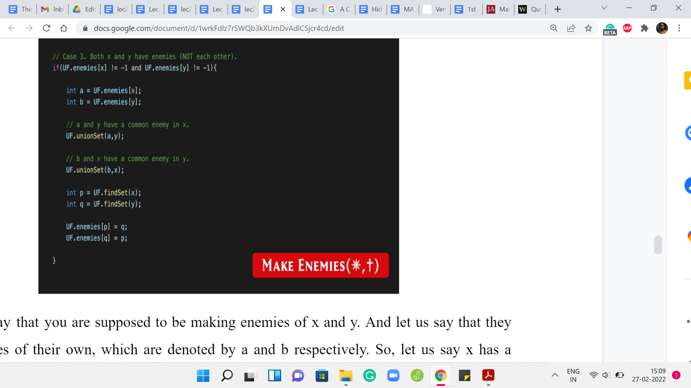
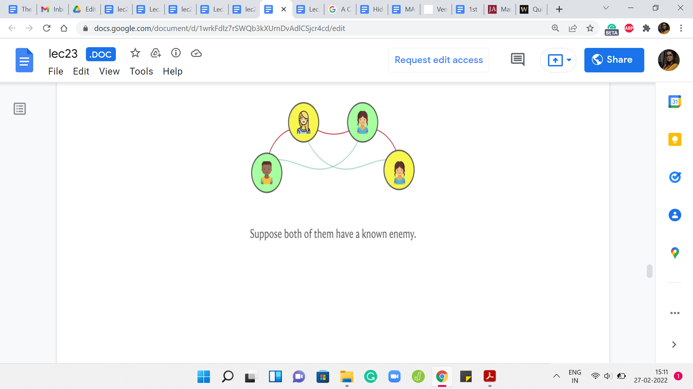

M 3 (War-III)
Lecture - 23
Disjoint Set Union - Module 3 (War-III)
Welcome back to the last segment of the final module in week four. If you remember, we have been discussing the problem ‘War.’ I should point out that this video is the last in a series of three videos. In the first one, we introduced the problem statement. In the second one, we described a solution.
In this short wrap-up video, I am going to show you some snippets from an implementation of the solution that we discussed in the previous video. I would not expect this to make any sense if you have not seen the previous two videos. Please make sure that you have watched those first. Our implementation is going to be in C++ because we will want to just build on the unionFind class that we described in the first module.
But it should be pretty straightforward to translate this into your favorite programming language. If you do end up doing that, please do submit a pull request to the official repository as always. We look forward to receiving your submissions. With that said, let us proceed to the implementation.
(Refer Slide Time 01:04)

I am just going to begin by looking at what the unionFind class looks like. We have just essentially introduced a public entity called ‘enemies.’ This is to keep track of the enemy pointers on the leader elements. The rank and friends are the usual things from the default DSU data structure. So, ‘friends’ is just a renaming of the parent array. I think we have been using P to denote the patent pointers previously.
Now I have just renamed that to ‘friends,’ just to remember that we are keeping track of the friendship relationship using these pointers. The initialization is pretty straightforward for friends and rank as before. In fact, in the problem statement as well, you will see that it is been made explicit that everybody is a friend of themselves, and nobody is their own enemy. The friends are singleton sets, to begin with. That is our standard initialization.
For ‘enemies,’ we just want to basically say that we are starting off with a blank slate and there are no recorded rivalries right in the beginning. We just follow the convention that we are going to use a value of -1 to designate that this person has no known enemies at the moment. That is a simple initialization. In this problem, the N people are in fact indexed from 0 to n-1.
In the previous module, I have been saying that I would like to initialize unionFind with N+1 because, for example, in destroying array, the elements were indexed from 1 to N. But here, you can just do standard instantiation with just n and your indices will work out fine. It is quite peaceful, actually.
(Refer Slide Time 02:58)


Let me just begin by also introducing these two new methods in this class. We have areFriends and areEnemies. You will notice that areFriends behaves very much like isSame set. You just check if the leaders are the same, and you return an appropriate value. As far as enemies, here what we want to do is check if the leaders are enemies of each other. If that happens to be the case, then we return yes, and otherwise, we return no. This is exactly as we discussed. These are two really simple helper functions to write and get out of the way.
The crux of the matter is really in figuring out the MAKE FRIENDS operation. Again, I am not showing you the parts of the code where we take in the input and do the case analysis and all that. That is fairly straightforward. In any case, you can always look up the full code from the repository. I am just going to show you some relevant snippets corresponding to the cases that we discussed.
Even here for MAKE FRIENDS, I have not shown you, at least not on the screen right now, the case where we handle the contradiction. The very first thing to do is check if the input to MAKE FRIENDS, which in this case is x and y, you want to check if they are enemies. If that actually returns yes, then you want to output -1 and just break out of this case altogether. That is a sanity check that you do need to do upfront.
Once you are out of that situation, essentially you replace the people x and y with the corresponding leader elements. The first case, which was the simplest one was a situation where x and y have no known enemies to speak of. If the enemy array is -1 at both these indices, then we just do a simple union and that takes care of the situation completely.
(Refer Slide Time 04:51)

But now we have a situation where one of the leaders has an enemy and the other one does not. In this case, remember what we said is that you can infer a new enmity, right. So x and y are about to become friends. Let us say x has a known enemy, then that known enemy also becomes an enemy of y. But the way that this plays out in the data structure, the way we are maintaining things is that you go ahead and you do the merger between the clusters of x and y.
What happens now is that it is possible that y may have taken over as the leader, in which case, you need to make sure that the ‘enemies’ array is appropriately updated. That is exactly what is happening here. First, you identify the enemy of x. Then you merge the sets that x and y are currently representing. Now just for the record, you look up the representative of this merged set, and you make sure that this representative becomes enemies with the set.
It is possible that nothing changes in the enemies array because possibly x is also the new representative, but just in case y has taken over. This ensures that the enemy is array is properly updated. Now I am going to skip case 2B, which is the exact symmetric situation where y has an enemy but x does not. It is essentially the same logic. But with, of course, the variables appropriately swapped.
(Refer Slide Time 06:20)

The final case was when x and y both have enemies. Remember that in this case, we said that the sets that contain these two enemies can also be merged because these two enemies can now be inferred to be friends between them. Let us say that ‘a’ is the enemy of x, and ‘b’ is the enemy of y. We merge x and y, because that is what we had set out to do anyway. But by inference, we also merge the sets that are being represented by ‘a’ and ‘b.’
Now what we have to do is, once again, make sure that our enemy pointers are appropriately updated. We have these two merged clusters. We identify the potentially ‘new leaders’ of these clusters. Then we make sure that we put their enmity on the record. That takes care of all the scenarios that could arise with MAKE FRIENDS. It is similar to MAKE ENEMIES, although the details are slightly different.
I think the most non-trivial case for MAKE ENEMIES was again the case when both of the people who are involved, both of the leaders, have enemies of their own. Let me just show you that one case. Remember that this is unlike in many of the other videos; this is not a line-by-line breakdown of the entire code. I am just showing you the parts that I think are the most interesting and non-trivial.
I hope that what you will be able to do from here is to actually write out all the cases by yourself. Of course, if you do need to look at the entire code, you could always take a look at the repository, which is linked to in the description of this video as well. Let us wrap this up with a look at the last case for the MAKE ENEMIES operation which I think is the one where there is the most going on.
(Refer Slide Time 08:00)

Let us say that you are supposed to be making enemies of x and y. Let us say that they have enemies of their own, which are denoted by ‘a’ and ‘b’ respectively. Let us say x has a known enemy, in ‘a’ and y has a known enemy in ‘b.’ If you go back and think about how we dealt with this case previously.
(Refer Slide Time 08:23)

We said that, well when that happens, so x and y are the two people on the top and a and b are the two people on the bottom. Then we said that, we need to make friends between, let us say x and b and y and ‘a’ because those are the additional friendships that we were able to infer by the common enemy rule. That is exactly what we do in court.
We say that, well, if ‘a’ was an enemy of x, then ‘a’ and y have a common enemy in x after you establish the enmity between x and y, which is what you have set out to do. Because ‘a’ and y have a common enemy, we are going to go ahead and merge the sets that ‘a’ and y belong to. For a very similar reason, we are going to merge the sets that b and x belong to. After these merges have been established, we still need to make sure that these big merged sets are actually enemies with each other as well.
Let us make sure that we pull out the leaders of these newly created sets and establish the enmity between them. That is exactly what is happening in the last four lines of this code snippet. Of course, you do have a few other cases to deal with for the MAKE ENEMIES relationship as well.
When you have one of the leaders having an enemy, the other one not having an enemy, and the even easier cases, when neither of them has a known enemy, in which case it is just two lines to update the respective enemy pointers. Even before that, do not forget to check for a contradiction before you get into any of these cases at all. If x and y are already friends, then you just output -1 and break out of this case.
Again, there needs to be a little bit of a wrapper to make sure that you get into the right cases in the right situations based on what the input looks like. You can go and look at the problem statement to make sure that you have the right formatting in terms of input and output. But at this point, I think you hopefully have enough information to piece together your own version of this solution.
As I have said before, this is by no means the only approach to this problem, but I found this way of solving it to be fairly natural, and actually quite elegant, really, once you have an understanding of all the possible scenarios that emerge. I do hope that you enjoyed this as much as I did. I will say that this is probably one of the more challenging problems that we have seen so far in this course. If it takes you a while to sort of really absorb all the cases and what is going on, then do take your time.
I think this problem does require a little bit of patience. But I think it is well worth it in the end. Do let us know how it goes. Please drop in a comment, if you have any questions or any suggestions, and we look forward to hearing from you. With that, it is a wrap for week four. I hope you enjoyed this little excursion through all the ways in which disjoint sets turn out to be useful. As I said, we will probably keep encountering this data structure.
It is something that also shows up, as I have mentioned earlier, in more advanced problems as something that is a piece of a bigger puzzle. I think this little bit of practice really is going to be handy. Fortunately, there are a lot of really great resources for learning more about the disjoint set union or unionFind or disjoint sets or whatever you want to call it. If you are interested in the theoretical aspects, you will find a link to a really wonderful book chapter in the description of the first module, or on the course website.
That is a great resource for learning more about why path compression works out so well, and so on. If you just want to try more practice problems then the code forces education segment on disjoint set union is a great place to start. They have tons of problems in increasing order of difficulty, roughly speaking, and they also have some great video materials.
If you really want to dig deeper, there are a bunch of resources and we will link to some of them in the description of this video. I really hope that you have fun exploring and I hope that you do actually get to use this in a contest that you participate in, in the future. As always, have fun, and please keep the conversation going on Discord and on the mailing list and I will see you back next week!